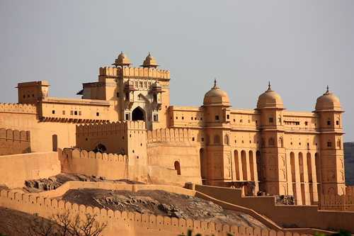
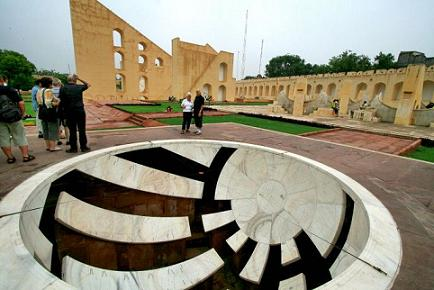

| VISITING PLACES | |||||||||||
|---|---|---|---|---|---|---|---|---|---|---|---|
| Name | Origin | Photo | |||||||||
| AMER FORT | JAIPUR (RAJASTHAN) |  | |||||||||
| Located on high hill , it is the principal tourist attraction in the jaipur area. the town of amer was originally built my mennas.and later it was ruled by Raja Man Singh | .. hence ther fort is also popularly known as the amer place. | (December 21,1550 - july 6,1614) | Place 1 | |||||||||
| WORLD TRADE PARK | JAIPUR (RAJASTHAN) |  |
|||||||||
| .With the increasing globlization ,jaipur initiated with a great step towards the same. And the step is named is as is WORLD TRADE PARK . that is beautyfully design by Architect Anoop.... it is a famous for tourist attraction that was inaugrated by Shahrukh khan in december. | DECEMBER 2012 | Place 2 | |||||||||
| CHOKI DHANI | JAIPUR (RAJASTHAN) |  |
|||||||||
| Choki dhani is synonymous with rajasthani village themend hospitality. the 5 star choki dhani resort in jaipur has been serving international and travelers. under guidance of Chairman Mr.Gul Vasnani and Director Mr. Subash Vaswani Chokhi Dhani Group. | Since december of 1994 | Place 3 | |||||||||
| ALBERT HALL MUESUM | JAIPUR (RAJASTHAN) |  |
|||||||||
| The albert hall was designed by a british architect.Sir Samuel Swinton Jacob. who combined Indian Islamic architecture with neo-gothic that was fashonibale in the victorin year.and the albert hall muesum is the finest example of ofvthis architecture in rajastha. | Since 1968 | Place 4 | |||||||||
| HAWAMAHAL | JAIPUR (RAJASTHAN) |  |
|||||||||
| the structure was built by MAHARAJA SAWAI PRATAP SINGH.he was so intimated and inspired by unique structure of khetri mahal and he built the grand and historiacl hawamahal .it was designed by LAL CHAND USTAD in the form of the crown of krishna,the hindu god. | Since 1799 | Place 5 | |||||||||
| JANTAR MANTAR | JAIPUR (RAJASTHAN) |  | |||||||||
| The hawa mahal of jaipur is built by RAJPUT KING SAWAI JAI SINGH.It is located near city place and hawa mahal of jaipur,the monument features masonry,stone and brass instruments that were built using astronomy and instrument design principles of ancient hindu. | Since 1735 | Place 6 |